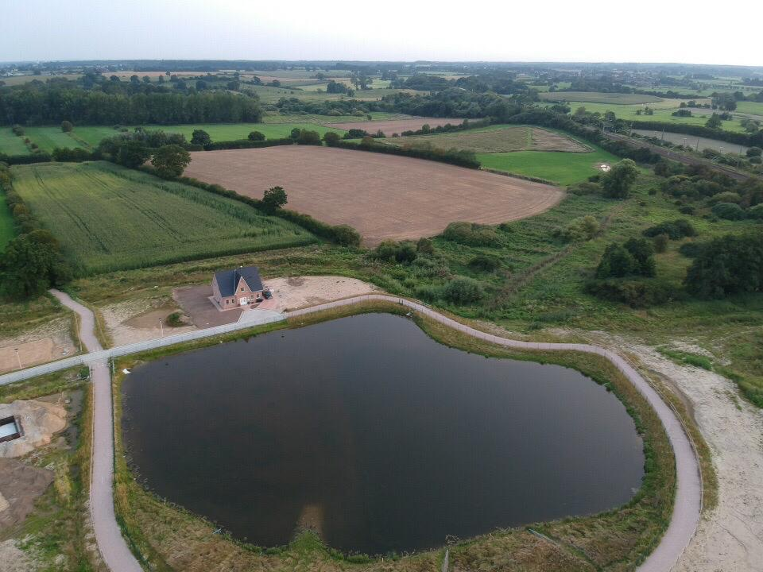

Galerie
Bilder vom Claudiussee und seiner Entstehung.



Dokumente
Relevante Pläne und Unterlagen zum Neubaugebiet Claudiussee.
Mitmachen
Diese Website ist ein offenes Gemeinschaftsprojekt – jede Hilfe ist willkommen.
Bilder einreichen
Du hast Fotos vom Claudiussee oder dem Neubaugebiet? Teile sie mit der Gemeinschaft, indem du einen Pull Request auf GitHub öffnest und deine Bilder dem Ordner images/ hinzufügst.
Dokumente ergänzen
Relevante Pläne, Gutachten oder Unterlagen zum Neubaugebiet können als PDF im Ordner documents/ ergänzt werden. Bitte auf kurze, aussagekräftige deutsche Dateinamen ohne Sonderzeichen achten.
Fehler melden oder Verbesserungen vorschlagen
Fehler auf der Website oder Ideen für neue Inhalte können direkt als Issue auf GitHub gemeldet werden.
So funktioniert es
- GitHub-Account erstellen (kostenlos) auf github.com
- Das Repository SamHeyna/claudiussee-web nutzen
- Änderungen im eigenen Branch vornehmen
- Einen Pull Request stellen – wir prüfen und veröffentlichen die Änderung